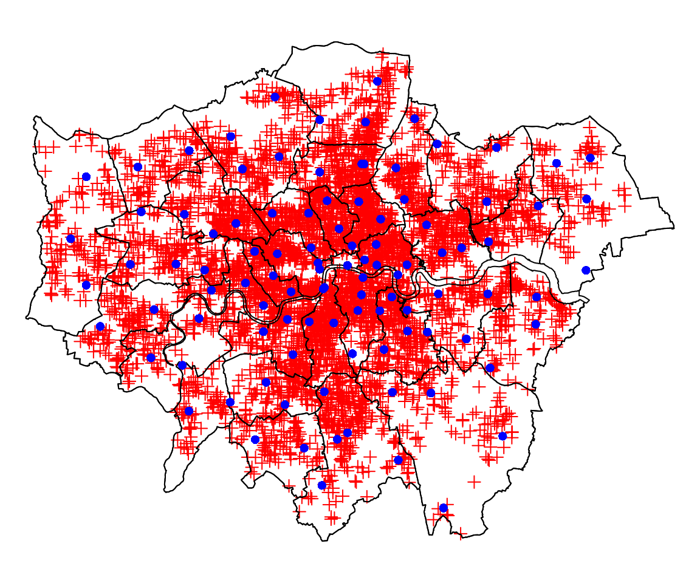
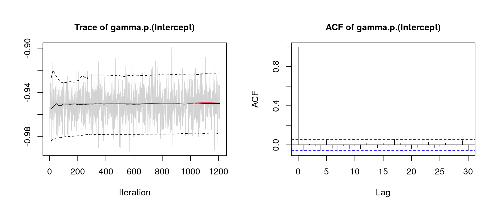
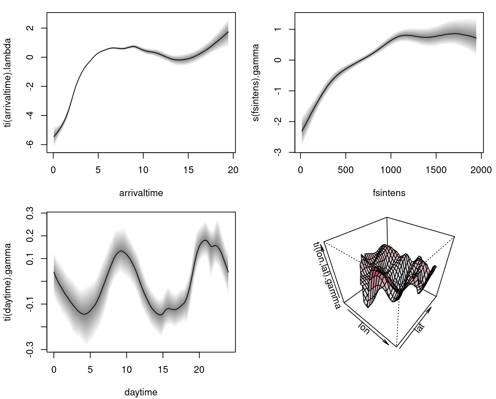
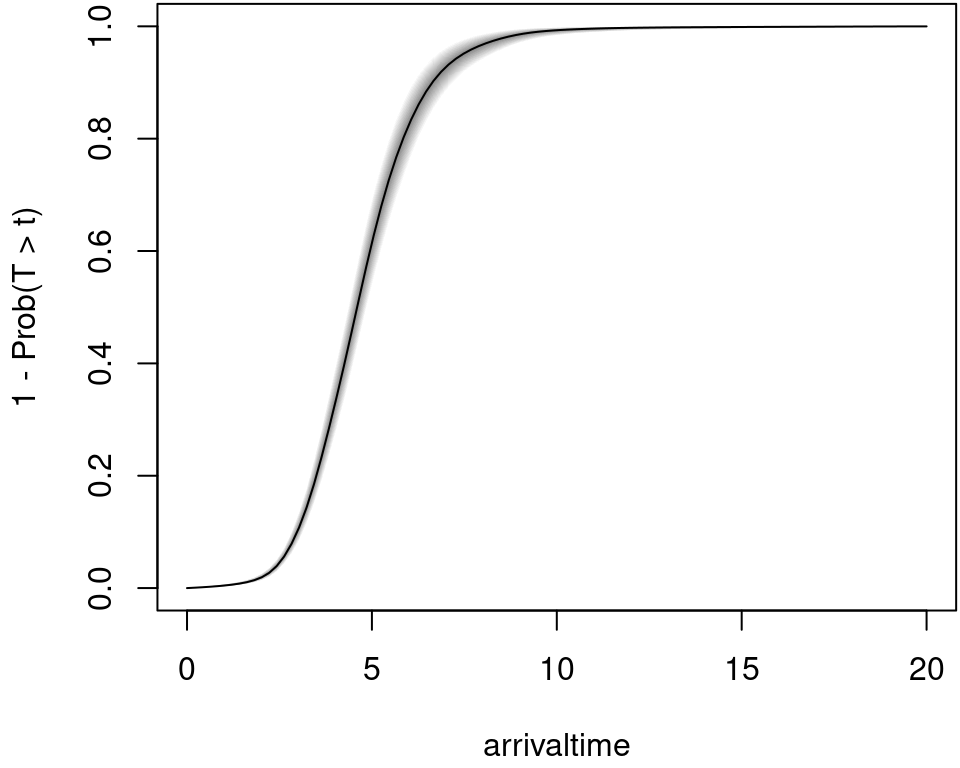

cox.RmdIn the article BAMLSS: Bayesian Additive Models for Location, Scale, and Shape (and Beyond) (Umlauf, Klein, and Zeileis 2018) an example based on the article of Taylor (2017) is used to illustrate the BAMLSS framework with complex space-time interactions in a Cox model.
The example uses data from the London Fire Brigade (LFB, http://www.london-fire.gov.uk/), which is one of largest fire brigades in the world. Each year, the LFB is called thousands of times, in most cases due to dwelling fires. To prevent further damage or fatal casualties, a short arrival time is important, i.e., the time it takes until a fire engine arrives at the scene after an emergency call has been received. The aim of this analysis is to explore the drivers of arrival times.
The response times are analyzed within a survival context where the hazard of an event (fire engine arriving) at time \(t\) follows a relative risk model of the form \[ \lambda(t) = \exp\left(\eta(t)\right) = \exp\left( \eta_{\lambda}(t) + \eta_{\gamma} \right), \] i.e., a model for the instantaneous arrival rate conditional on the engine not having arrived before time \(t\). Here, the hazard function is assumed to depend on a time-varying predictor \(\eta_{\lambda}(t)\) and a time-constant predictor \(\eta_{\gamma}\).
We set up a model with the time-constant predictor \[
\eta_{\gamma} = \beta_0 + f_1(\texttt{fsintens}) + f_2(\texttt{daytime})
+
f_3(\texttt{lon}, \texttt{lat}) + f_4(\texttt{daytime}, \texttt{lon},
\texttt{lat}),
\] where \(\beta_0\) is an
intercept and function \(f_1( \cdot )\)
is the effect of fire station intensity (fsintens, computed
with a kernel density estimate of all fire stations in London). The
other variables represent: The time of the day (daytime),
exact spatial coordinates of the fire (lon and
lat). Here function \(f_4( \cdot
)\) is a three-dimensional interaction effect.
The time-varying additive predictor has the following form \[
\eta_{\lambda}(\texttt{arrivaltime}) = f_0(\texttt{arrivaltime}) +
f_1(\texttt{arrivaltime}, \texttt{lon}, \texttt{lat}),
\] where \(f_0( \cdot )\) is the
baseline hazard for variable arrivaltime, the waiting time
until the first fire engine arrives after the received emergency
call.
The probability that the engine will arrive on the scene after time \(t\) is described by the survival function \[\begin{equation} \label{eqn:surv} S(t) = \mathrm{Prob}(T > t) = \exp \, \left( -\int_0^t \lambda(u)du \right), \end{equation}\] which is of prime interest in this analysis.
The data is freely available from the London DataStore (http://data.london.gov.uk/) under the UK Open Government Licence (OGL v2). It can be downloaded from http://data.london.gov.uk/dataset/london-fire-brigade-incident-records which also contains previous years. The preprocessed data is part of the bamlss package and can be loaded with
## coordinates arrivaltime daytime fsintens
## 12279 (-0.09832153, 51.65413) 6.033333 0.1263889 248.6067
## 12280 (-0.04467665, 51.48959) 3.400000 0.3266667 1646.1975
## 12281 (-0.1101969, 51.47268) 4.383333 0.4641667 1333.3776
## 12282 (-0.2448571, 51.45319) 5.800000 1.9297222 300.6900
## 12283 (-0.1874054, 51.48648) 5.133333 1.9308333 1195.7156
## 12284 (-0.2893525, 51.61031) 4.966667 3.5480556 319.6787and is stored as a "SpatialPointsDataFrame". Therefore,
the spatial distribution of fires in London along with boundary polygons
and station locations can be plotted instantly with:
library("sp")
par(mar = rep(0, 4))
plot(LondonBoundaries)
plot(LondonFire, col = "red", add = TRUE)
plot(LondonBoroughs, add = TRUE)
plot(LondonFStations, col = "blue", add = TRUE, pch = 16)
The Cox model is implemented in the cox_bamlss() family
and uses a special optimizer function cox_mode() and
sampling engine cox_mcmc(). Note that the optimizer and
sampler function do not need to be called explicitly within the
bamlss() wrapper call, because the
cox_bamlss() family specifies this already in its return
value, such that internally function bamlss() nows to only
use the estimation engines that are supplied by the family.
fam <- cox_bamlss()
names(fam)## [1] "family" "names" "links" "transform" "optimizer" "sampler"
## [7] "predict"There is also an additional transformer function, which is needed for
computing the (numerical) integrals that are part of the log-likelihood.
Predictions are also based on integrals, therefore the
predict() function is also part of this family object and
will be used by predict.bamlss() instead of the default
methods.
The model formula has two parts, the time-dependent for \(\eta_{\lambda}\) and the time-constant part for \(\eta_{\gamma}\) and can be set up with
f <- list(
Surv(arrivaltime) ~ ti(arrivaltime,k=20) + ti(arrivaltime,lon,lat,d=c(1,2),k=c(5,30)),
gamma ~ s(fsintens) + ti(daytime,bs="cc",k=30) + ti(lon,lat,k=80,d=2) +
ti(daytime,lon,lat,bs=c("cc","cr"),d=c(1,2),k=c(10,30))
)Note that the Surv() function from the survival
package (Therneau 2019) is used to set up
the formula for \(\eta_{\lambda}\).
Also note that the arrival times are not censored in this application.
The model is estimated with
## Set the seed for reproducibility.
set.seed(222)
## Start estimation
firemodel <- bamlss(f, data = LondonFire, family = "cox",
subdivisions = 25, maxit = 1000,
n.iter = 6000, burnin = 3000, thin = 20, cores = 8)Note, due to the complexity of the model and model terms estimation takes quite long. On a Linux system with 8 Intel i7-2600 3.40GHz processors estimation takes approximately 1.2 days.
Good practice after fitting the model is to do some convergence checks of the MCMC chains, e.g., by looking at traceplots
plot(firemodel, which = "samples") Note, for convenience we only show the traceplot of the intercept term of predictor \(\eta_{\gamma}\). The traceplot indicates convergence of the MCMC chains and have close to i.i.d. behavior. The model summary gives
summary(firemodel)##
## Call:
## bamlss(formula = f, family = "cox", data = LondonFire, cores = 8,
## subdivisions = 25, maxit = 1000, n.iter = 6000, burnin = 3000,
## thin = 20)
## ---
## Family: cox
## Link function: lambda = log, gamma = log
## *---
## Formula lambda:
## ---
## Surv(arrivaltime) ~ ti(arrivaltime, k = 20) + ti(arrivaltime,
## lon, lat, d = c(1, 2), k = c(5, 30))
## -
## Smooth terms:
## Mean 2.5% 50% 97.5%
## ti(arrivaltime).tau21 2.087e-02 5.443e-03 1.717e-02 5.698e-02
## ti(arrivaltime).edf 1.319e+01 1.061e+01 1.317e+01 1.585e+01
## ti(arrivaltime).alpha 7.017e-01 7.428e-04 8.238e-01 1.000e+00
## ti(arrivaltime,lon,lat).tau21 2.742e-03 3.547e-05 1.731e-04 6.251e-03
## ti(arrivaltime,lon,lat).tau22 1.256e+02 3.188e+01 1.062e+02 3.061e+02
## ti(arrivaltime,lon,lat).edf 1.369e+01 8.909e+00 1.360e+01 1.839e+01
## ti(arrivaltime,lon,lat).alpha 7.107e-01 1.755e-03 8.394e-01 1.000e+00
## parameters
## ti(arrivaltime).tau21 0.117
## ti(arrivaltime).edf 16.853
## ti(arrivaltime).alpha NA
## ti(arrivaltime,lon,lat).tau21 1.442
## ti(arrivaltime,lon,lat).tau22 100.714
## ti(arrivaltime,lon,lat).edf 24.858
## ti(arrivaltime,lon,lat).alpha NA
## ---
## Formula gamma:
## ---
## gamma ~ s(fsintens) + ti(daytime, bs = "cc", k = 30) + ti(lon,
## lat, k = 80, d = 2) + ti(daytime, lon, lat, bs = c("cc",
## "cr"), d = c(1, 2), k = c(10, 30))
## -
## Parametric coefficients:
## Mean 2.5% 50% 97.5% parameters
## (Intercept) -0.9501 -0.9773 -0.9499 -0.9234 -0.941
## -
## Acceptance probability:
## Mean 2.5% 50% 97.5%
## alpha 0.9932 0.9398 0.9999 1
## -
## Smooth terms:
## Mean 2.5% 50% 97.5% parameters
## s(fsintens).tau21 9.083e+00 1.746e+00 6.596e+00 2.919e+01 8.171
## s(fsintens).edf 7.381e+00 5.954e+00 7.439e+00 8.504e+00 7.638
## s(fsintens).alpha 9.048e-01 4.122e-01 9.785e-01 1.000e+00 NA
## ti(daytime).tau21 3.385e-02 1.703e-04 8.700e-04 4.559e-02 0.000
## ti(daytime).edf 1.094e+01 6.215e+00 9.916e+00 2.201e+01 6.461
## ti(daytime).alpha 9.176e-01 5.090e-01 9.856e-01 1.000e+00 NA
## ti(lon,lat).tau21 4.313e+00 2.161e+00 4.049e+00 7.642e+00 7.714
## ti(lon,lat).edf 5.794e+01 4.940e+01 5.806e+01 6.489e+01 65.221
## ti(lon,lat).alpha 4.695e-01 1.428e-03 3.702e-01 1.000e+00 NA
## ti(daytime,lon,lat).tau21 3.245e+00 2.595e-01 1.928e+00 1.464e+01 0.000
## ti(daytime,lon,lat).tau22 5.289e+00 8.305e-01 3.856e+00 1.770e+01 0.000
## ti(daytime,lon,lat).edf 3.846e+01 2.034e+01 3.763e+01 6.181e+01 0.013
## ti(daytime,lon,lat).alpha 7.939e-01 1.493e-01 9.154e-01 1.000e+00 NA
## ---
## Sampler summary:
## -
## DIC = 22636.5 logLik = -11247.03 logPost = -10031.52
## pd = 142.4373
## ---
## Optimizer summary:
## -
## AICc = 22607.29 edf = 122.0436 logLik = -11178.97
## logPost = -8898.27 time = 14443.76
## ---and indicates that the three-dimensional effects in
lambda and gamma have an effect on the
response times. The estimated effects can be plotted with
 The upper left plot shows the estimated baseline hazard effect. The upper right plot the time-constant effect of fire station intensity. The lower left plot the estimated effect of the time of the day and the lower right plot the estimated time-constant spatial effect.
Predictions in for an estimated Cox model are based on the custom
predict function cox_predict(). Here, predicted
probabilities are based on numerical integration, therefore, the user
can specify the subdivisions that are used in the integration routine.
For example, let’s pick a sample location within the boundaries of
London and predict the corresponding probability that the fire engine
arrives at 15pm within 0 to 20 minutes.
## Extract the 150th sample.
i <- 150
## Create a new data frame for prediction.
nd <- data.frame(
"arrivaltime" = seq(0, 20, length = 100),
"daytime" = 15
)
nd$fsintens <- LondonFire$fsintens[i]
nd$lon <- LondonFire$lon[i]
nd$lat <- LondonFire$lat[i]
## Predict probabilities.
nd$p <- 1 - t(predict(firemodel, newdata = nd,
type = "probabilities", subdivisions = 100, FUN = c95))The estimated probabilities that the fire engine arrives in \(t\) minutes can then be plotted with
